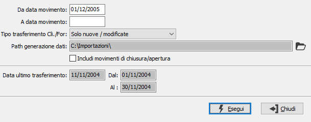

Esportazione dati contabili
La procedura consente di esportare la prima nota contabile da OS1 su file sequenziale. Il metodo di esportazione consente di trattare movimenti contabili, Iva e scadenze; è inoltre possibile trasferire anche le anagrafiche dei clienti e dei fornitori.
Il programma mostra la data dell'ultimo trasferimento e quale periodo è stato oggetto del trasferimento.
I files vengono generati compatibilmente con i modelli preimpostati per l'importazione su OS1.

DA DATA MOVIMENTO: indicare la data, relativa ai movimenti contabili, da cui si desidera iniziare l'esportazione. Se sono già stati effettuati trasferimenti viene proposta come data il giorno successivo all'ultimo trasferimento.
A DATA MOVIMENTO: indicare la data, relativa ai movimenti contabili, con cui si desidera terminare l'esportazione.
TIPO TRASFERIMENTO CLI/FOR.: indicare il metodo di selezione relativo al trasferimento delle anagrafiche di clienti e fornitori: nessun trasferimento, tutte le anagrafiche, solo nuove/modificate.
PATH GENERAZIONE DATI: indica il percorso in cui saranno generati i file relativi ai dati esportati. Tramite il pulsante Cartella è possibile selezionare direttamente il percorso desiderato.
INCLUDI MOVIMENTI DI CHIUSURA/APERTURA: definisce se includere nel trasferimento anche i movimenti contabili di apertura/chiusura (casella con segno di spunta).